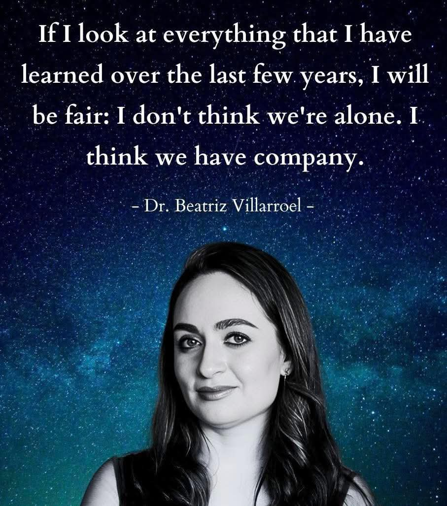

Denna webbplats är tillägnad att presentera svenska astronomen Beatriz Villarroels forskning och vetenskapliga arbete.
Forskningen utgår från systematiska studier av historiska astronomiska data, framför allt fotografiska himmelsplåtar från mitten av 1900-talet, där oväntade försvinnanden och framträdanden av ljusstarka objekt har identifierats.
Syftet med webbplatsen är inte att driva spekulationer eller föra fram färdiga förklaringar, utan att tillgängliggöra metoder, observationer och vetenskapligt publicerat material.
Vetenskapliga framsteg har alltid börjat med att anomalier tagits på allvar.
Webbplatsen har initierats och sammanställts av en oberoende medhjälpare till forskningen.
Initiativet grundar sig i en övertygelse om att den typ av långsiktig, metodisk och arkivbaserad forskning som Beatriz Villarroel bedriver är av stor vetenskaplig betydelse och förtjänar ökad synlighet och saklig uppmärksamhet.
Erfarenheten visar att forskningsområden som utmanar etablerade ramar ofta möter motstånd, och att kvinnor inom sådana fält inte sällan behöver navigera ytterligare hinder utöver de vetenskapliga.
Denna webbplats har skapats för att presentera Beatrizs arbete öppet, och samtidigt med en förhoppning att flera ska förstå vidden av den banbrytande forskningen hon är involverad i — den som kan få betydelse för mänsklighetens framtid, eftersom hennes forskning pekar allt mer mot att vi aldrig har varit ensamma på denna jord.
Nedan visas en video där Beatriz intervjuas om sin forskning.